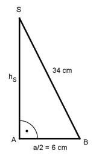

Aufgabe 239 Für Dekorationssterne werden Pyramiden auf jede Seitenfläche eines Würfels aufgesetzt. Der Würfel hat Seiten von 12 cm, die Pyramiden haben Seitenkanten von jeweils 34 cm. Wie viel Silberfolie braucht man zur Verkleidung?

Satz von Pythagoras im Dreieck ABC: BC2 = AB2 + AC2 342 cm2 = hS2 + 62 cm2 | -62 cm2 hS2 = 342 cm2 - 62 cm2 hS2 = 1 120 cm2 |√ hS = 33,5 cm M = 24 * Seitenflächen der Pyramiden 12 cm * 33,5 cm M = 24 * ------------------- = 4 824 cm2 2